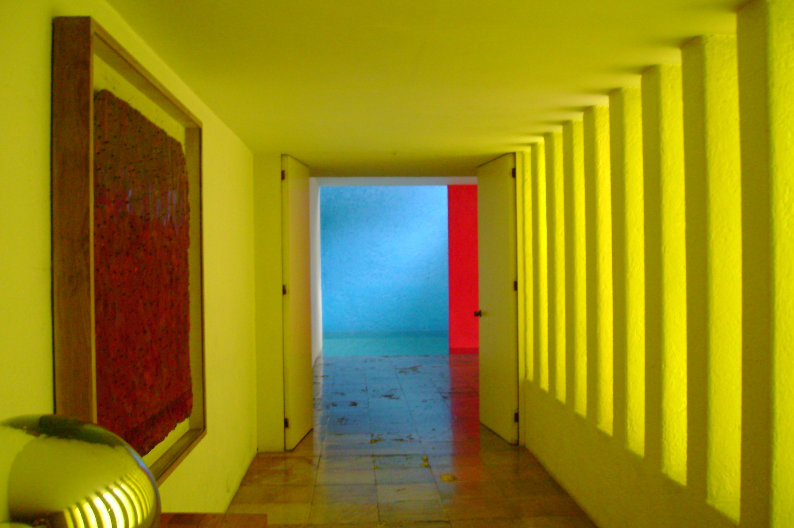

A corridor dyed pure yellow leads to a doorway; beyond it, a cobalt-blue pool wall and a sliver of magenta. Nothing here is "hung on a wall," yet this hallway alone is one of the most affecting color compositions of the 20th century. Designed when Luis Barragán was 74, in what would be his final house, it turns an ordinary passage into a slow, almost devotional ritual of light and color.
One-point tunnel perspective: every line — walls, ceiling, floor — converges toward the doorway at the far end, pulling the eye into that glowing rectangle of color. It's the most classical tunnel composition there is, and the doorway itself becomes a frame within a frame, compressing the distant blue and red into one small, jewel-like accent.
A deliberate interruption in the foreground: a dark red woven textile in a wood frame hangs on the left wall, next to a rounded brass lamp shade — two soft, organic, textured objects that break the corridor's otherwise rigid geometry and give the eye a place to pause before it's pulled toward the door.
A ribbed wall on the right: a row of vertical fluted pilasters catches raking light and throws a rhythmic stripe of light and shadow across the surface, doubling down on the sense of depth — Barragán often used relief-textured walls like this to "tame" direct sunlight, turning light itself into a structural material.
This corridor doesn't use "three colors" — it uses the most extreme relationship on the color wheel: yellow, blue, and magenta-red, an almost perfectly equidistant primary triad, the theoretical maximum of color tension. But Barragán doesn't split it evenly: yellow claims nearly 100% of the visible surface — walls, ceiling, even the window glass itself is tinted yellow — while blue and red only appear as a narrow sliver at the far end. That ratio, one color dominating with the others reserved as a single accent, is exactly what keeps this much contrast from feeling garish. It reads as restrained, even luxurious, instead of loud.
Here's the sharper move: Barragán isn't painting a wall yellow — he's dyeing the light itself. The window at the corridor's end is glazed in yellow glass, so sunlight passes through yellow before it ever reaches the room. Every surface — the air, the floor's reflections, the shadows — inherits that tint. That's a fundamentally different move from painting a white-lit wall yellow: tinting the source, not just the surface, produces a far more immersive, enveloping color experience.
Barragán's longtime friend, the painter Chucho Reyes Ferreira, was known for intensely saturated color work and was a direct influence on Barragán's late palette — the two knew each other for decades, Barragán collected his paintings, and that fearlessness about color clash migrated straight into his architecture.
The blue wall at the corridor's end is a working pool wall — by day it's constantly "re-lit" by rippling reflections off the water below. The magenta sliver in the frame is not structural; it's a freestanding screen wall whose only job is to hide the actual skylight behind it, so the viewer only ever sees the glow, never the mechanism producing it. It's a theatrical move: hide the machinery, show only the effect, and the light itself reads as more mysterious, as if it has no traceable source.
Barragán called his own work "emotional architecture" — he once said that any building that fails to produce serenity is a mistake. This corridor is that philosophy made physical: to walk from the bedrooms toward the living room and pool beyond, you first have to pass through a passage saturated in pure color and stripped of almost all "information" — no art on the walls, no ornament, no narrative, only color and light. That forced emptying-out is exactly what makes the sliver of blue and the dancing water light at the end feel so rich when you finally reach it — a deliberate emotional set-up, built entirely out of architecture.
The client, advertising executive Francisco Gilardi, reportedly gave Barragán only two conditions: keep the old jacaranda tree in the courtyard, and include an indoor pool. Beyond that, Barragán worked with almost no budget or programmatic constraints — the result was his final, and arguably purest, experiment in color.
Luis Barragán (1902–1988) was born in Guadalajara, Jalisco, Mexico. Trained as a civil engineer, he was entirely self-taught as an architect. In the 1920s and '30s he traveled through France and Spain, attended Le Corbusier's lectures in Paris, and later visited Morocco — the vernacular architecture of North Africa and the Mediterranean, with its thick walls, introverted courtyards, and sun-soaked color, became a decisive influence. In 1980 he became only the second-ever laureate of the Pritzker Architecture Prize. His own home, the Luis Barragán House and Studio, was named a UNESCO World Heritage Site in 2004. Casa Gilardi (1975–77) was his final residential design.